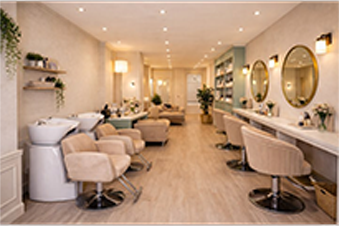
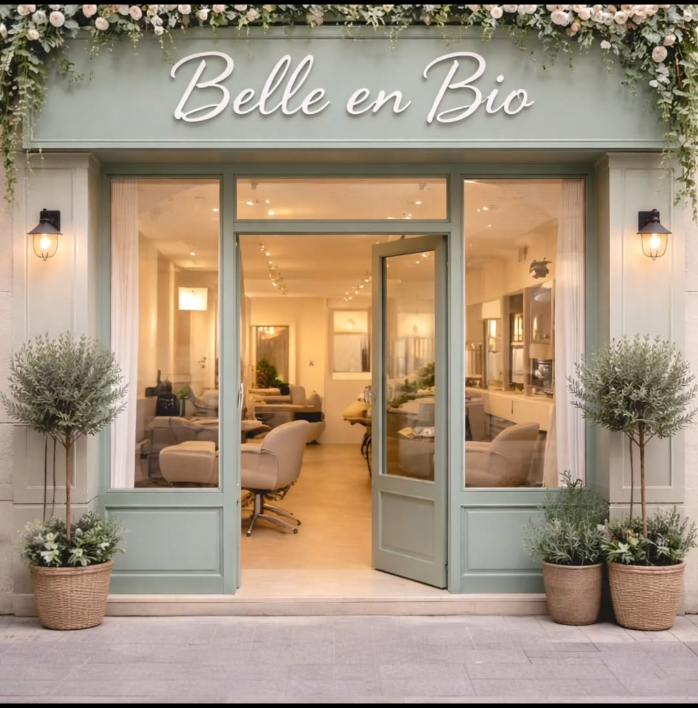

Nina :
La pro des chignons star


Nous vous attendions au 35 rue de la fonderie Mulhouse

La pro des chignons star
le barbier avec des coups de tondeuses digne du plus grand coiffeur du monde
avec des changements de couleur comme l'ar-en-ciel
Lundi :
Fermé
Mardi :
09h00
à
13h00
13h30
à
18h30
Mercredi :
09h00
à
13h00
Jeudi :
13h00
à
19h30
Vendredi :
09h00
à
13h00
13h30
à
18h30
Samedi :
08h00
à
14h00
Dimanche :
Fermé
Vous pouvez prendre rendez-vous par Planity ou par téléphone au 0389832178
Dans notre Salon nous vous proposons un diagnostic gratuit. C'est une étape importante avant toutes prestations. Il nous permet d'analyser la nature du cheveux, de son état et aussi le cuir chevelu. c'est un moment d'échange pour comprendre vos attentes. Grâce au diagnostic, nous pouvons vous proposer une coupe, une couleur ou même un soin adapté tout en respectant la santé de vos cheveux. Le diagnostic est gratuit car il fait partie du service. Il permet de donner des conseils personnalisés, d'éviter les erreurs et de garantir un résultat satisfaisant.
le diagnostic du cuir chevelu: nous vous offrons aussi un diagnostic du cuir chevelu, c'est aussi une étape essentielle avant toutes prestations. Il permet d'analyser précisément l'état du cuir chevelu afin de proposer un soin adapté. Lors du diagnostic, nous observons les éventuels déséquilibres: excès de sébum, sécheresse, sensibilité, pellicules ou chutes de cheveux. Il prend aussi en compte vos habitudes de vie et vos produits utilisés. Pour réaliser cette analyse, on utilise 2 languettes spécifiques: °la première languette permet de mesurer de taux de sébum de votre cuir chevelu °la seconde languette permet de mesurer le taux de pellicules ou de chutes de cheveux Ce diagnostic permet de proposer un programme de soins personnalisé, d'assurer un suivi professionnel.
Dans notre salon Belle En Bio, nous choisissons des produits bio de qualité, pour prendre soin de vos cheveux et de votre cuir chevelu. Ils sont fabriqués avec des ingrédients naturels sans produits chimiques et agressifs. Ils sont donc plus doux pour la peau, le cuir chevelu et les cheveux, tout en réduisant les risques d’irritations et d’allergies. Le bio allie performance et naturalité: Bien formulé, ces produits nettoient et prennent soin efficacement tout en offrant une expérience agréable grâce aux extraits végétaux et aux huiles essentielles. -Choisir le bio, c’est prendre prendre soin de soi, tout en prenant soin de la planète-